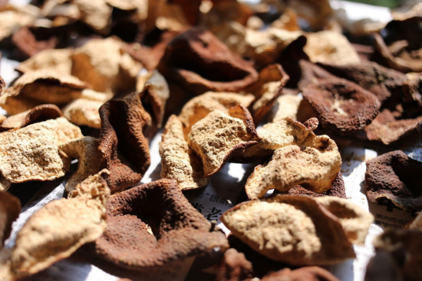

新会陈皮，广东省江门市新会区特产，中国国家地理标志产品
陈皮以广东所产为佳，历史贸易中特称“广陈皮”，以别于其他省所产。清代大医师叶天士所开的药方“二陈汤”，特别写明“新会皮” 。因不是新会所产的其药效远逊，且乏香味而痹口（即苦辣味），所以新会陈皮价格较高，皮比肉贵。 新会陈皮散发芳香扑鼻的香味，是其独有品质。由于新会陈皮具有很高的药用价值，又是传统的香料和调味佳品，所以向来享有盛誉，早在宋代就已成为南北贸易的“广货”之一，现行销全国和南洋、美洲等地区。 2006年10月25日，原国家质检总局批准对“新会陈皮”实施地理标志产品保护。，入选中国农业品牌目录 。
广东江门开平著名土特产：金山火蒜.蒜头是我市闻名遐迩的土特产，栽培历史悠久，是主要的冬种作物之一。
该蒜历史悠久,以蒜衣绛红,肉质瓷白,生辛辣熟甘 甜,胶质丰润的特有品质而闻于海内外,历来为出口创汇产品。发展冬蒜，不但能出口创汇增加经济收入，还可以改良土壤，提高地力。
恩平濑粉，广东省江门市恩平市特产，中国国家地理标志产品。/p>
恩平濑粉表面光滑，粗细均匀，无粘连，色泽均匀，煮后不糊汤、不粘条，入口软、韧、爽、滑，吃起来有韧性。恩平人有在中秋节吃濑粉的习俗，该习俗起源于汉朝。家家户户以圆圆的、细细长长的濑粉以及圆如明月的月饼及芋头、圆柚、甜圆糍、龙眼、果子、椰子、苹果、葡萄子等的圆形礼品来祭月、拜月、赏月，以此祈求家人及亲朋永远能团圆、团聚、长久健康平安。所以八月十五家家必备濑粉，户户都要“轧濑粉”（恩平方言，制作濑粉）。